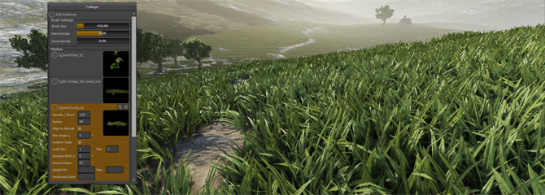
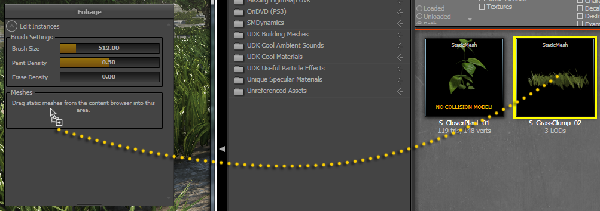
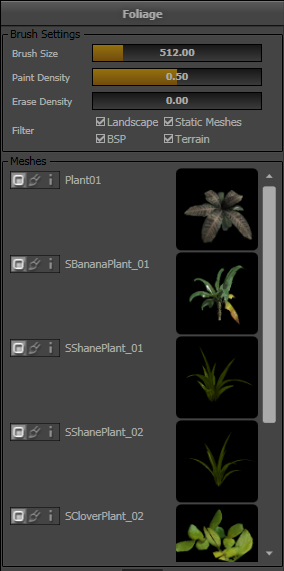
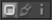
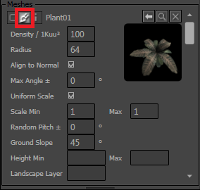
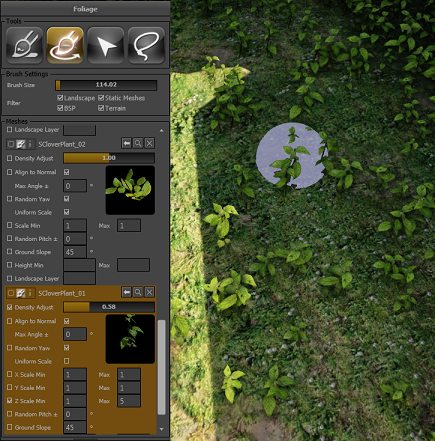
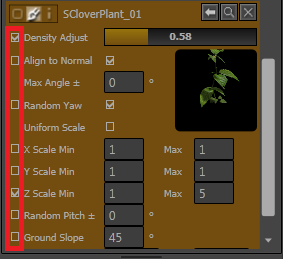
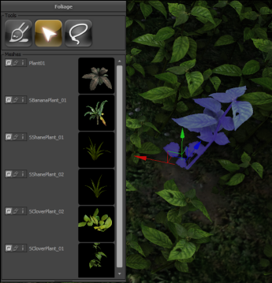
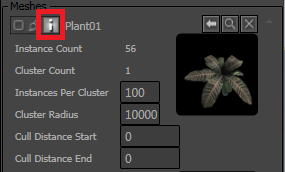

UDN
Search public documentation:
FoliageCH
English Translation
日本語訳
한국어
Interested in the Unreal Engine?
Visit the Unreal Technology site.
Looking for jobs and company info?
Check out the Epic games site.
Questions about support via UDN?
Contact the UDN Staff
日本語訳
한국어
Interested in the Unreal Engine?
Visit the Unreal Technology site.
Looking for jobs and company info?
Check out the Epic games site.
Questions about support via UDN?
Contact the UDN Staff
UE3主页 >植被
植被

概述
植被编辑模式
 激活了该模式将会显示植被编辑模式窗口。
激活了该模式将会显示植被编辑模式窗口。

网格物体列表

当拖拽完网格物体后，将会显示网格物体的图标及参数值。您可以将多个静态网格物体拖拽到Mesh List（网格物体列表）中。
网格物体列表中的每个网格物体都有三个模式，可以通过网格物体左侧的按钮进行访问。
第一个模式是折叠视图，仅显示网格物体名称和图标。第二个模式是Paint Settings(描画)设置模式，它具有一些参数，用于控制在关卡中放置实例的方式。第三个模式是Instance Settings(实例设置)模式，它控制已经放置到关卡中的实例的行为。在本文档中接下来的部分会对这些内容进行详细介绍。 当处于Paint Settings(描画设置) 或Instance Settings（实例设置）模式时，在网格物体图标上方也会出现三个按钮。| | 这个按钮使用内容浏览器中当前选中的静态网格物体替换当前关卡中已经放置的所有网格物体实例。 |
| 这个按钮将网格物体从网格物体列表中删除并且 删除已经放置到关卡中的该网格物体的所有实例 。 | |
| | 这个按钮在内容浏览器中定位该静态网格物体。 |
植被工具
 | 描画工具，用于向世界中添加植被实例及从世界中删除植被实例。 |
| Reapply（重新应用）工具, 用于改变已经在世界中描画的实例的参数。在2011年10月的版本中初次提供该功能。 | |
| Selection（选择）工具，用于选择单独的实例以进行移动、删除等操作。在2011年9月的版本中初次提供该功能。 | |
 | Paint Select(描画选择)工具，通过使用描画画刷选择多个实例。在2011年9月的版本中初次提供该功能。 |
描画工具
当激活Foliage Mode（植被模式）时，将会在关卡中描画一个透明的球形画刷，代表操作植被画刷的位置。按下Ctrl键并按下鼠标将会在画刷区域添加植被，按下Ctrl+Shift 将会抹去植被。
当描画植被时，引擎在球体类似物中向您的视角处执行几次线性检测，这意味球体中您可以看到的任何表面都是植被实例的潜在目标。
当抹去植被时，将会从所有这些球体内部的实例随机选择将要抹去的候选实例。
在网格物体列表中选择网格物体
可以通过点击网格物体列表中的网格物体来选中它们及取消选中它们(桔色是选中)。当在编辑器视口中描画时，仅影响选中的网格物体。关卡中已经放置的其他静态网格物体的植被实例不会受到任何影响，并且网格物体列表中没有选中的项的实例不会被添加到关卡中。 以下是选中两个网格物体的示例。将不会在关卡中描画或抹去S_CloverPlant_01网格物体，因为没有选中它。
画刷设置
- Brush Size(画刷尺寸) 是画刷的尺寸，以Unreal单位为单位。
- Paint Density(描画密度) 是指当使用Ctrl键时您添加实例时所使用的目标密度。
- 这个值得范围是从0到1，值为1将会以每个网格物体的Mesh（网格物体）属性中列出的最大密度描画网格物体实例(参照下面)。
- 如果画刷中网格物体的密度已经大于这个值，那么将不会添加网格物体。
- Erase Density(抹去密度) 是指当您使用Ctrl+Shift抹去实例时您想获得的目标密度。
- 这个值的范围是从0到1，0代表没有网格物体。如果网格物体的密度小于这个期望的抹去密度，那么将不再会抹去网格物体。
- 这允许您把已经描画的网格物体变得稀疏，而不必完全地删除所有实例。
- Filter(筛选) 允许您控制用于放置实例放置到哪种对象上。
- 注意，当植被球形画刷位于和该筛选类型不匹配时，该画刷将会消失。
- 同时请注意，您仅能在激活的动态载入关卡中的对象上进行描画。
描画设置
Mesh List(网格物体列表)中的每个网格物体都有很多属性，这些属性用于控制在描画时如何为这个网格物体放置实例。可以通过按下中间描画画刷图标来访问这些属性。
| 属性 | 描述 |
|---|---|
| Density / 1Kuu²(密度/ 1Kuu²); | 每 1000x1000虚幻单位区域内，放置这个网格物体的实例的数量。 |
| Radius(半径) | 这个网格物体实例之间的最小距离。(在2011年10月份之前的版本中，该设置不能正常使用。) |
| Align to Normal (对齐到法线) | 是否旋转植被网格物体使它垂直或则遵循它放置在其上面的表面的方向。 |
| Max Angle(最大角度) | 如果这个值不为0，那么这项指出了当对齐到法线时所遵循的最大角度。比如，如果地面是30°斜坡，并且您设置Max Angle(最大角度) 为10°，那么植被将尝试顺着地面的方向但是会放置在距离垂直方向10°的地方。 如果您在5°表面上放置一个实例，角度小于n 10°，那么植被将会旋转角度来匹配 5°斜坡。 |
| Uniform Scale(均匀缩放) | 是否想独立地缩放实例的X、Y和 Z的范围。 |
| Scale Min/Max (比例 最小值/最大值) | 实例将会在最小值和最大值比例范围之间随机选择进行缩放。 |
| Random Pitch(随机倾斜度) ± | 给您所指定的 ± 角度添加变换，以便实例不会都精确地指向同一个方向。 |
| Ground Slope(地面坡度) | 如果该项为非零值，那么当您正在植被的表面比这个角度更陡峭时，将不会在其上面放置植被实例。如果该项为负值，那么仅在比指定的角度更陡峭的表面上放置植被实例。 |
| Height Min/Max (高度 最大值/最小值) | 如果指定了该项，那么当世界空间Z（高度）值在这个范围之外时，将不会应用实例。 |
| Landscape Layer(景观层) | 如果在这项输入信息，那么将仅在指定的景观层上均匀地描画植被实例，其它参数也会应用。 |
Reapply (重新应用) 工具

这里提供的设置和描画工具中的设置非常类似，但是左侧有一个额外的复选框，用于选择要重新应用的参数。
如果选中了某个复选框，那么当在现有实例上应用描画画刷时将会重新应用对应的参数。大部分设置和使用描画工具时一样，但是有几点区别：| Density Adjust(密度调整) | 这是现有实例的密度乘数。如果您设置滑块为2.0，那么特定区域中实例的数量将会加倍。设置滑块的值为0.5，那么在描画后将仅留下50%的实例。 |
| Ground Slope(地面坡度) | 这将删除不符合地面坡度标准的实例。将不会添加新的实例。 |
| Height Min/Max(高度 最小值/最大值) | 这将删除不符合高度范围标准的实例。将不会添加新的实例。 |
| Landscape Layer(景观图层) | 这将会根据指定图层密度成比例地删除实例。将不会添加新的实例。 |
Selection(选择)工具
当激活选择工具时，可以通过点击单独的实例来选中它们。按下CTRL并点击可以进行多选。一旦选中了实例，便可以执行一些动作：| 动作 | 结果 |
|---|---|
| Drag a widget axis（拖拽控件轴） | 选中的实例将跟随空间移动，根据空间模式的不同，可以进行旋转或缩放。 |
| Alt + 拖拽控件轴 | 首先会复制选中的实例，然后这些实例将随着空间移动。 |
| Delete（删除）键 | 选中的实例将会被删除。 |
| End（结束）键 | 选中的实例将尝试对齐到地面。如果最初放置实例时启用了该设置，那么它们将会对齐到正常位置。 |

Paint Selection(描画选择） 工具
Paint Selection(描画选择)工具允许您通过使用球形画刷同时选择多个实例，该球形画刷也可以同描画工具结合使用。可以应用网格物体列表选择及筛选设置，就像它们应用于正常的网格物体描画一样。在描画过程中按下Shift键可以取消选中实例。一旦您选中了某个实例，您可以切换到正常的Selection(选择)工具并执行那里列出的某些动作。

实例设置模式

| 属性 | 描述 |
|---|---|
| Instance Count (实例数量) | 该属性显示了在当前动态载入关卡中目前所放置的这个网格物体的实例的数量。 |
| Cluster Count（群集数量） | 该属性显示了在当前动态载入关卡中渲染这个网格物体的实例所使用的群集数量。在一个单独的描画函数中一同渲染的成组的实例成为一个群集，用于提高描画效率。群集分配是世界空间中群集中已有的实例及群集半径自动决定的。以下两个参数可以调整这个属性。 |
| Instances Per Cluster（每个群集中的实例数量） | 这设置了每个群集中的实例数量的最大值。记住，一个群集中的所有实例总是在一个单独的描画函数中进行渲染，总三角形数量等于每个网格物体的多边形数量乘以每个群集中实例数量的结果。理想的数量是由网格物体中多边形的数量所决定的。 |
| Cluster Radius（群集半径） | 这是在将实例分配给新的群集之前，该群集可以增长到的最大尺寸。降低这个数值将会增加群集的数量，但是却改进了遮挡,因为该群集具有较小的边界框。 |
| Cull Distance Start(剔除距离起点) | 这是实例开始淡出的距离，以世界单位为单位。注意，这项需要在材质中进行设置。请参照以下的Culling（剔除）部分。 |
| Cull Distance End(剔除距离终点) | 这是实例完全被剔除掉的距离，以世界单位为单位。如果材质没有设置为淡入淡出单独材质，那么整个群集会一起消失及重新出现。请参照以下的Culling（剔除）部分。 |
剔除

材质及顶点动画
模拟诸如风这样的效果的顶点动画可以通过相应的材质实现，比如在互动式植被Actor文档中描述的方法，但是您需要对您的材质进行小小的修改，使它可以正确地应用于实例化后的植被。对象世界位置材质节点可以为您提供InstancedFoliageActor在关卡中的位置，而不是单独实例的位置。不要使用对象世界位置，使用变换位置节点将常量 4-向量 (0,0,0,1) 从本地空间转换为世界空间。这样将会给出单独实例在世界坐标中的位置。静态网格物体设置
LOD（细节层次级别）
从2011年10月份的版本开始，植被上支持静态网格物体细节层次。有几点需要注意：- 推荐您在您的材质上启用Screen Door Fading（屏幕门淡入淡出）功能。
- 注意，所有LOD层次之间共享光照贴图和阴影贴图，所以所有LOD需要使用同样的展开图。
- 目前，整个群集的实例同时改变LODs。以后，我们可能添加让每个实例基于距离淡入淡出的支持。
光照
每个单独的网格物体实例具有它自己的由Lightmass生成的 阴影 和/或 光照 贴图，并且这些贴图会针对每个支持预计算的组平铺到一起。需要在静态网格物体上选中几个设置才能使得预计算光照在实例化的植被上正常工作。当生成针对实例化网格物体的阴影贴图时，Lightmass的设置需要非常严格，错误的设置可能导致重新构建光照后出现黑色网格物体。- Light Map Coordinate Index(光照贴图坐标索引) - 必须设置为具有位移UV展开图 的有效UV通道。静态网格物体的“Generate Unique UVs(生成唯一UVs)”功能可以快速地生成唯一的展开图。
- Lightmap Resolution(光照贴图分辨率) - 这项必须是足够小的值，以便在一个单独群组中的实例的所有阴影贴图(默认100个)可以平铺到一起，而不会超出最大贴图分辨率(4094x4096)。